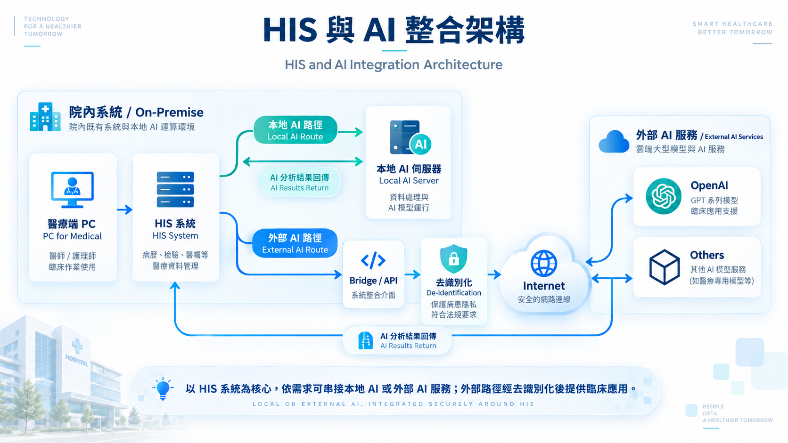

Local AI Route
本地 AI 路徑
醫療端 PC 進入 HIS 系統後，可直接串接本地 AI 伺服器，完成院內資料處理、模型運行與結果回傳。
院內既有 HIS 系統可依臨床應用需求，分別串接本地 AI 伺服器或外部 AI 服務，將 AI 能力整合至既有醫療資訊流程。
HIS 直接與本地 AI 伺服器互動，於院內運算並將 AI 分析結果回傳 HIS。
外部 AI 路徑HIS 經由 Bridge / API、去識別化與 Internet，串接 OpenAI 或其他外部 AI 服務，再將結果回傳 HIS。
整體架構分為本地 AI 與外部 AI 兩條路徑，依不同應用情境選擇適合的運算與模型服務。

醫療端 PC 進入 HIS 系統後，可直接串接本地 AI 伺服器，完成院內資料處理、模型運行與結果回傳。
HIS 系統可另走外部 AI 路徑，依序經過 Bridge / API、去識別化與 Internet，再串接 OpenAI 或其他模型服務。
目前院方推動之十一項 AI 應用服務，涵蓋醫師、藥事、護理、住院照護與民眾服務等情境。
系統讀取醫師撰寫的 SOAP notes 與相關檢驗資料，經 AI 分析後產生診斷碼建議清單，供醫師參考並選用，減少人工查找編碼的時間。
Reads the physician's SOAP notes and laboratory data, then uses AI to suggest diagnosis codes for review and selection.
目前應用查看應用 →依醫令中的診斷碼及相關臨床資訊，由 AI 提出用藥建議，作為醫師開立處方時的參考依據。
Uses the diagnosis codes in the medical order and related clinical information to suggest medications as a prescribing reference.
目前應用查看應用 →依門診、急診與住院等不同來源的病歷資料，自動產生對應類型的診斷書草稿，供醫師確認與調整後簽發。
Automatically drafts medical certificates from outpatient, emergency, and inpatient records for physician review.
目前應用查看應用 →整合病人基本資料、體溫脈搏呼吸（TPR）、檢驗數據、微生物檢驗與藥物敏感性試驗（AST）等資訊，由 AI 輔助研判抗生素應升階或降階。
Consolidates patient data, TPR, lab, microbiology, and AST results to help assess antibiotic escalation or de-escalation.
目前應用查看應用 →分析開單日前三天至開單日的病人資料，協助第三線抗生素審核；可比較多次分析結果，並在修改 Prompt 後重新執行。
Analyzes data from three days before the order date to support third-line antibiotic review, with re-runnable prompts.
目前應用查看應用 →於醫院官網提供 AI 即時問答服務，協助快速回應民眾的查詢需求。
Provides instant AI Q&A on the official website to respond quickly to public inquiries.
目前應用查看應用 →語音辨識轉為文字後，再經 AI Filter 整理，修正錯字、去除冗詞並調整語意不順之處，提升輸入內容的正確性與可讀性。
Applies an AI filter after speech-to-text to fix typos, remove redundancy, and improve readability.
目前應用查看應用 →協助藥師進行門診醫令的核藥安全快審，將用藥安全相關資訊集中呈現，作為核藥作業的參考依據。
Presents medication-safety information in one place to support fast outpatient order review by pharmacists.
目前應用查看應用 →護理人員點選 AI 護理紀錄後，填入 Prompt 並送出，系統即將護理評估資料整理為格式完整的正式護理紀錄。
Turns nursing assessment data into a complete formal nursing record from a submitted prompt.
目前應用查看應用 →規劃於每週五中午以背景批次方式進行 AI 分析，為住院病人產生 Weekly Summary；醫師可自行決定是否帶入，並確認內容後使用。
Planned weekly background batch AI analysis to generate inpatient weekly summaries for physician confirmation.
規劃中查看應用 →ChatPTCH 透過對話式介面提供生成式 AI 服務，支援文字與語音輸入；示範影片以 medgemma-27b 進行醫療知識問答。
A conversational generative AI platform with text and voice input; the demo uses medgemma-27b for medical Q&A.
目前應用查看應用 →